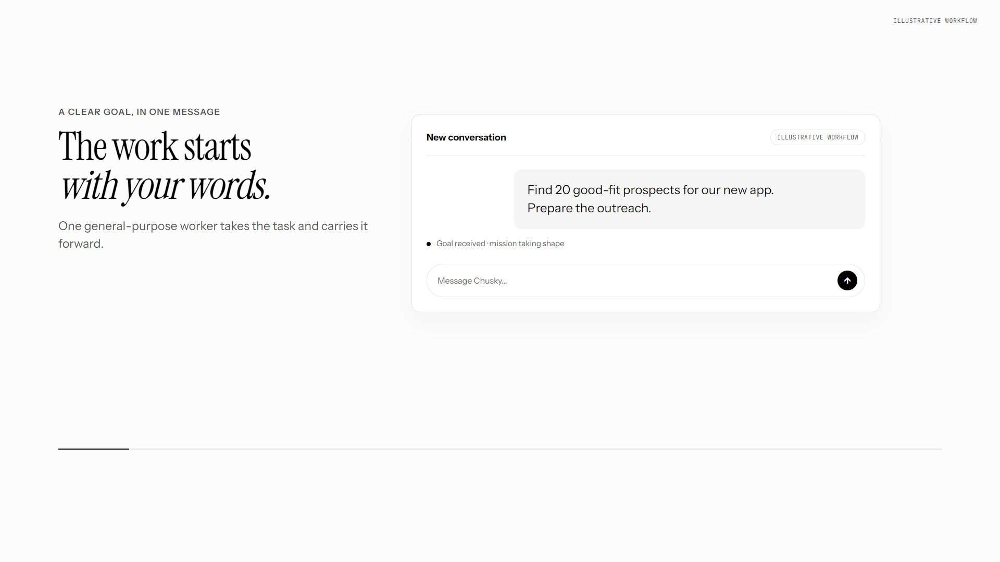
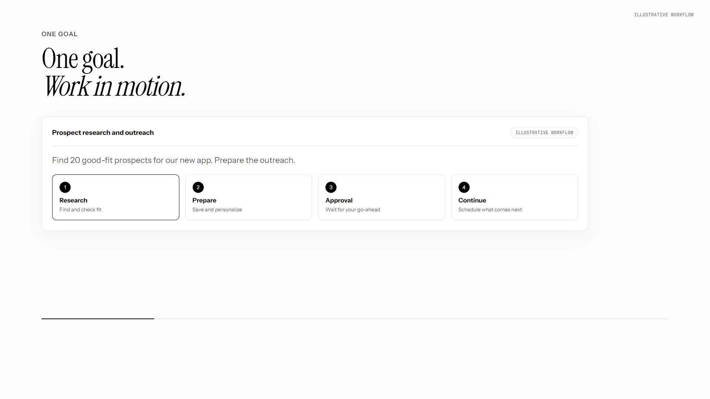
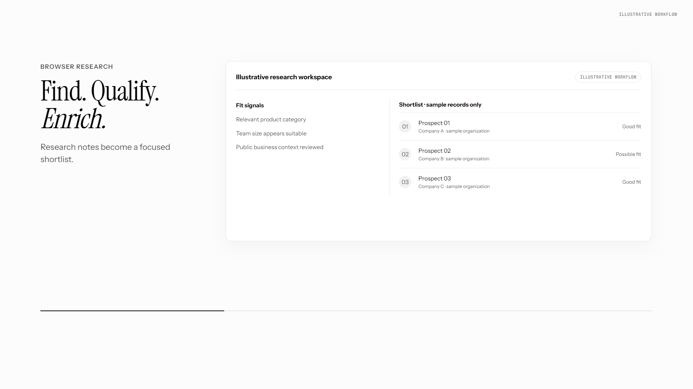
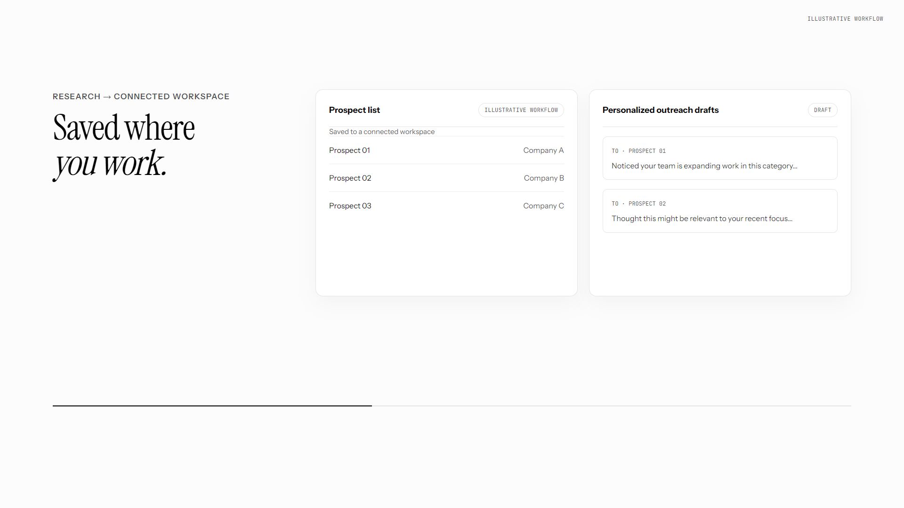
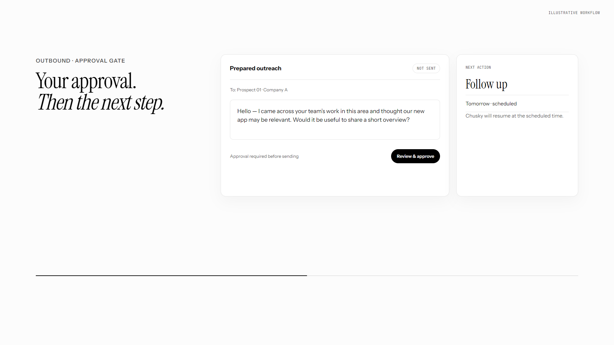
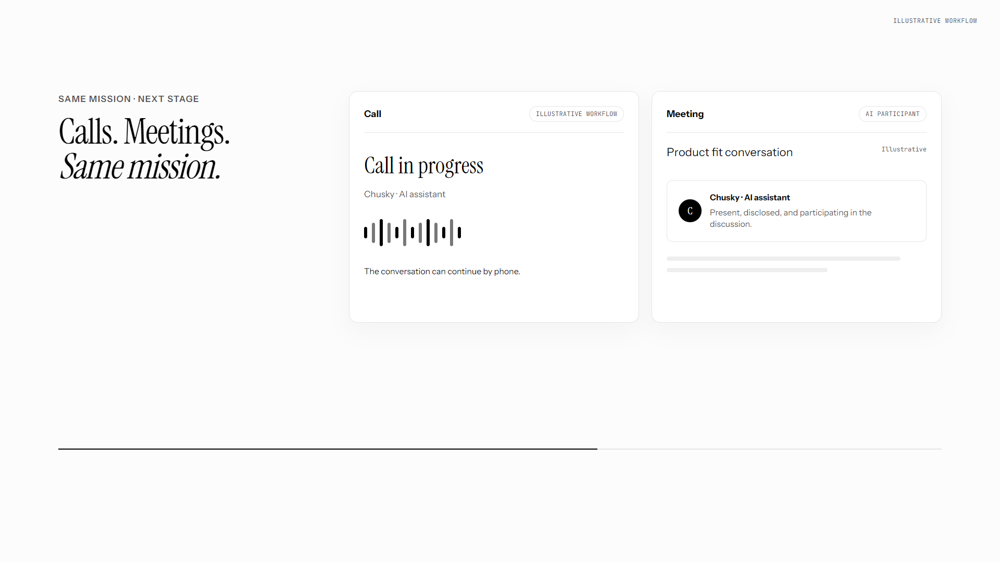
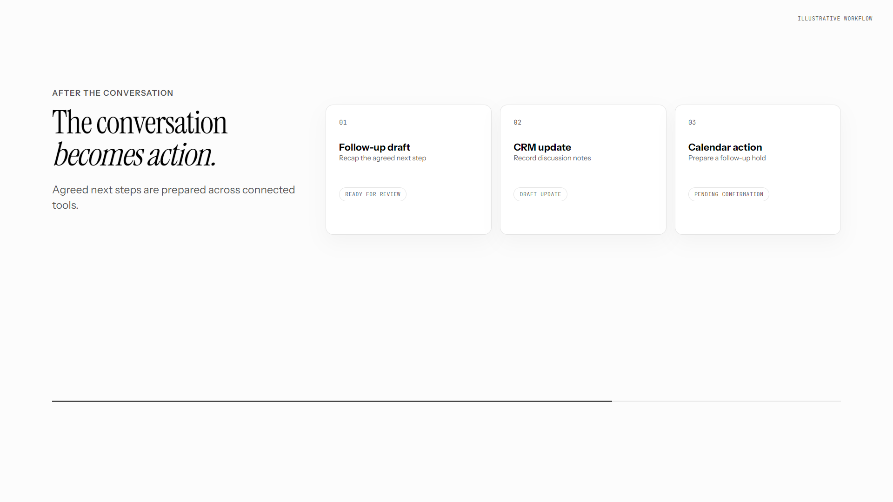
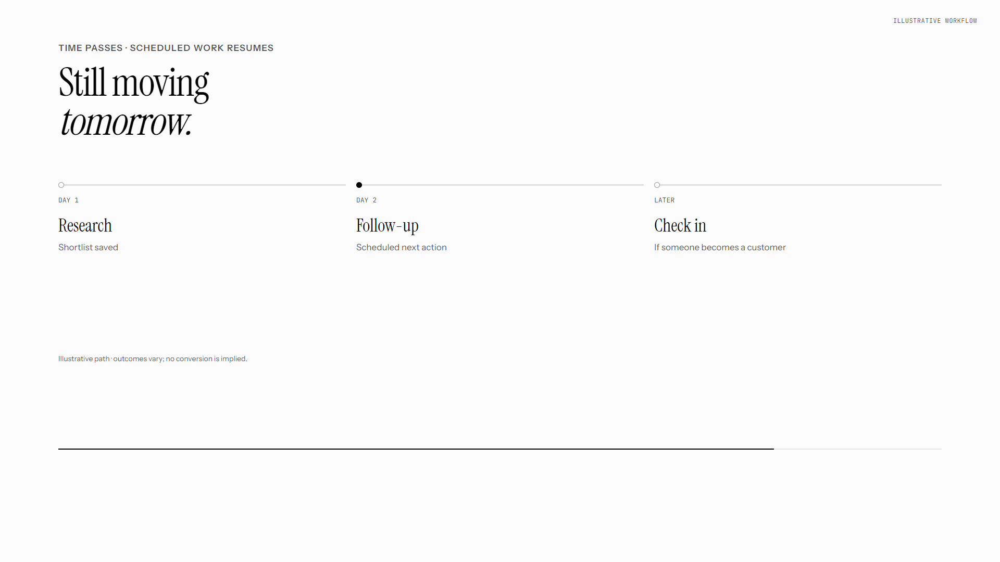
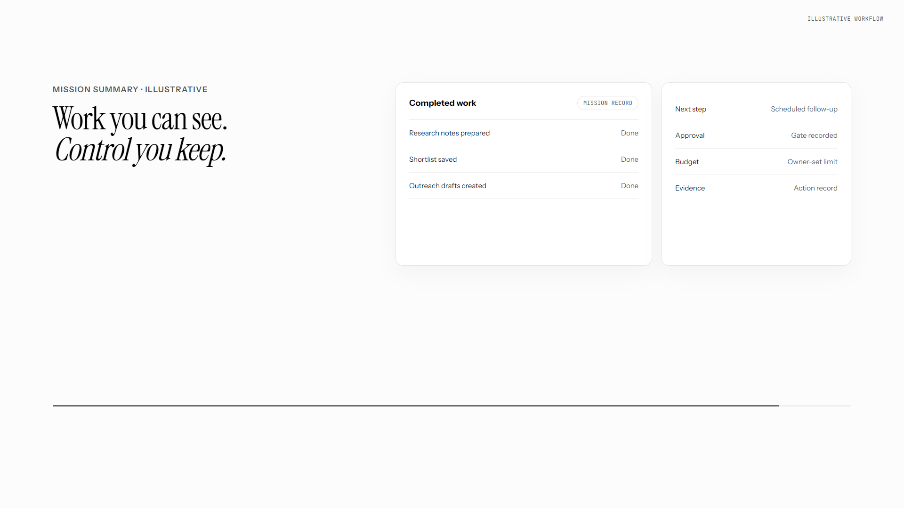
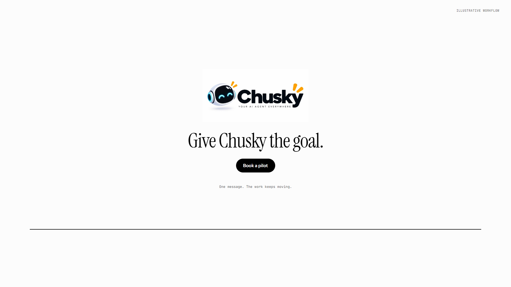

01: The request
0.0–5.0s
The request

02: One goal
5.0–9.0s
One goal

03: Research and shortlist
9.0–17.0s
Research and shortlist

04: Saved work
17.0–23.0s
Saved work

05: Approval and schedule
23.0–29.0s
Approval and schedule

06: Calls and meetings
29.0–37.0s
Calls and meetings

07: Next actions
37.0–44.0s
Next actions

08: Later check-in
44.0–50.0s
Later check-in

09: Evidence and control
50.0–55.0s
Evidence and control

10: Give Chusky the goal
55.0–60.0s
Give Chusky the goal